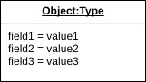
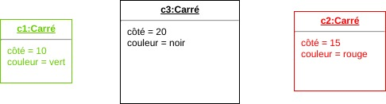
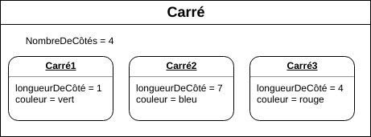
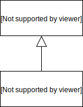
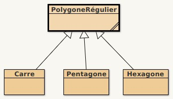
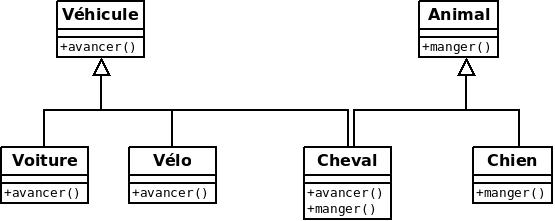
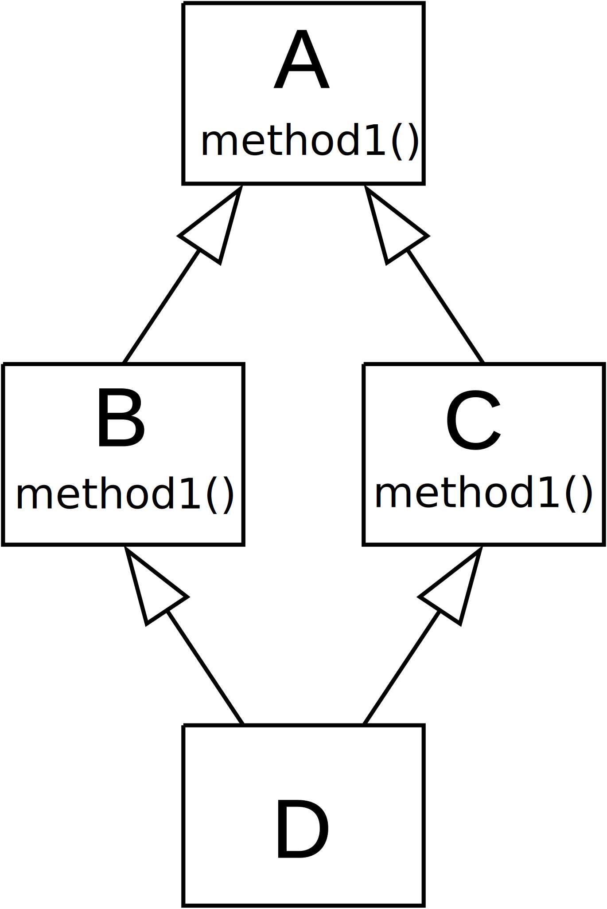
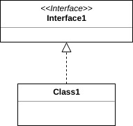
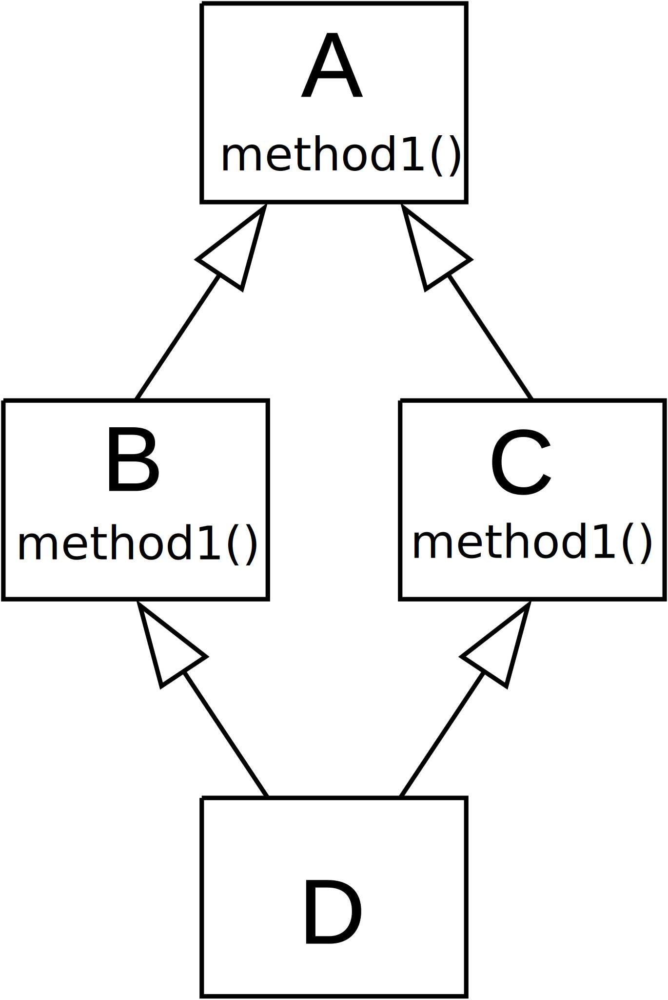

OOP : Object-oriented programming
Programmation impérative et fonctionnelle
La programmation objet s'inscrit comme une évolution de la programmation impérative : un programme est une suite d'instructions qui spécifient précisément ce que doit effectuer la machine ; c'est la manière la plus naturelle et spontanée qu'on a d'aborder la programmation, qui correspond à la structure des processeurs, manipulable en assembleur et facilement manipulable en utilisant les langages évolués bâtis sur l'assembleur. On a des données, stockées en mémoire, modifiées par les programmes au cours du temps. Le système est caractérisé par son état.La notion de fonction permet la réutilisation et facilite l'écriture de gros programmes.
Les notions de fonction et de type de données sont centrales en programmation.
Tous les langages mainstream sont des langages impératifs. C'est intuitif et ça marche mais un problème important de la programmation impérative est la gestion des effets de bord, problème dont hérite la POO.
D'autres langages ne sont pas impératifs, par exemple la programmation fonctionnelle, qui interdit les effets de bord.
On peut illustrer l'évolution des langages impératifs à partir du titre d’un ouvrage de Niklaus Wirth (Pascal, Modula-2, Oberon) : Algorithm + Data Structures = Program
A + d = P langage de type pascal, années 70
A + D = P langage modulaire, Ada, modula-2, années 80
a + D = P langage Orienté Objet années 90, simula67...
Exemple : Programme calculant la surface et le périmètre d'un carré
A + d = P
function surfaceCarré(float côté) function perimetreCarré(float côté)Utilisation: import de la lib, puis :
(Note : lib = library = "bibliothèque" en anglais ; souvent improprement traduit par "librairie")
s = surfaceCarré(1.5)On voit ici que la notion de carré n'apparaît pas explicitement dans le code ; existe seulement à travers un chiffre, la valeur de son côté.
A + D = P
type carré{
float côté
}
function surface(carré c)
function perimetre(carré c)
Utilisation: import du module carré, puis :
carré c c.côté = 1.5 float s = surface(c)Le carré a une existence explicite, il est composé de différentes variables ; des fonctions, extérieures au module, peuvent manipuler des carrés.
a + D = P
A partir de maintenant, les exemples utilisent la syntaxe java.
class Carré{
float côté;
Carré(float côté){ ... } // constructeur
float surface(){ ... }
float périmètre(){ ... }
}
Utilisation : import de la classe Carré, puis :
Carré c = new Carré(1.5) float s = c.surface()Non seulement le carré a une existence, peut contenir des variables, mais aussi des fonctions, qui font maintenant partie de la classe.
Notes java :
- En java les constructeurs sont des fonctions qui portent exactement le même nom que la classe.
- En java, on utilise le mot-clé
new pour créer des objets.
Classes et objets
Une classe regroupe des variables et des fonctions.En POO, on appelle souvent champs les variables d'une classe, et méthodes ses fonctions.
| procédural | objet |
|---|---|
| Fonction | Méthode (method) |
| Variable | Champ (field) |
class Carré{
// variables
float côté
// méthodes
Carré(float côté){
this.côté = côté;
}
float surface(){
return côté * côté;
}
float périmètre(){
return 4.0 * côté;
}
}
Un objet est une instance d'une classe.
Pour créer un objet, on fait appel à un constructeur de la classe.
Carré c = new Carré(1.5)On dit qu'on a instancié la classe
Carré.
Notes java :
- Dans le code d'une classe, on peut désigner l'instance courante en utilisant le mot-clé this ; il est optionnel sauf lorsqu'il y a une ambiguïté (c'est le cas dans le constructeur).
Très important : en créant une classe, on crée un nouveau type de données. En plus de pouvoir manipuler des variables de type prédéfini, comme
int (nombre entier) ou String (chaîne de caractère), on peut manipuler des variables de type Carré.
Notation UML : 
État d'un objet et données d’instance
On parle de l'état d'un objet (défini par les valeurs de ses variables d'instance)et de son comportement (méthodes agissant sur les variables d'instances).
class Carré{
float côté;
Couleur couleur;
Carré(float côté, Couleur couleur){
this.côté = côté;
this.couleur = couleur;
}
}
Carré c1 = new Carré(10, vert); Carré c2 = new Carré(15, rouge); Carré c3 = new Carré(20, noir);
Variables et méthodes de classe
Les variables que l'on vient de voir (côté, couleur) ont une valeur spécifique pour chaque objet de la classe.
Il existe aussi des variables et méthodes de classe, communes à tous les objets de la même classe.
On utilise le mot-clé static en java.
En utilisant que du static, possible d'utiliser l'objet comme simple moyen de ranger des fonctions. 
class Carré{
// variables de classe
public final static nombreDeCôtés = 4;
// variables d'instance
float côté;
Couleur couleur;
// méthodes
Carré(float côté){ ... }
float surface(){ ... }
float périmètre(){ ... }
}
Visibilité
Il est possible de limiter l'accès aux membres d'une classe ; l'accès aux variables ou méthodes peut être public (public) ou privé (private).
class Carré{
private int longueurDuCoté;
private Couleur couleur;
public Couleur getCouleur(){ ... }
public void setCouleur(Couleur couleur){ ... }
public int getLongueur(){ ... }
public void setLongueur(int longueur){ ... }
}
Notes java :
- On verra que java permet d'autres types de visibilité.
Encapsulation
La maîtrise de la visibilité permet de limiter leur visibilité au strict minimum.Cacher l'état interne d'un objet (ses variables privées) et exposer son comportement via les méthodes qui agissent sur cet état s'appelle l'encapsulation des données.
Cet aspect "boîte noire" a plusieurs avantages :
- Modularité : le code d'un objet peut être développé et débuggé indépendamment du code des autres objets.
- Clarté : contrat clair pour le code utilisateur : les détails d'implémentation ne viennent pas perturber la compréhension des fonctionnalités proposées.
- Réutilisabilité : possibilité d'utiliser des objets écrits par d'autres dans son code, ou de développer des objets réutilisables.
- Evolution, debug : un objet problématique peut être remplacé par un autre ; cf le monde réel : si une durite casse, on change la durite, pas la voiture.
Getters et setters
Pour assure l'encapsulation, on met en général en privé les variables d'instance et on permet au code externe de les manipuler en définissant des getters et setters (accesseurs / mutateurs).Par exemple
getCouleur() et setCouleur()
Convention d'écriture :
getNomDeLaVariable() et setNomDeLaVariable()
Héritage
L’héritage est un mécanisme qui permet, lors de la déclaration d’une nouvelle classe, d'y inclure les caractéristiques d’une autre classe.L'héritage établit une relation de généralisation-spécialisation qui permet d'hériter dans la déclaration d’une nouvelle classe (appelée classe dérivée, classe fille, classe enfant ou sous-classe) des caractéristiques (propriétés et méthodes) de la déclaration d'une autre classe (appelée classe de base, classe mère, classe parent ou super-classe).
En java, on utilise le mot-clé extends.
class A{ ... }
class B extends class A{ ...}
Représentation UML :

En déclarant une nouvelle classe B par héritage de la classe A, on peut alors dire que :
A est une généralisation de B et B est une spécialisation de A ;
A est une superclasse de B et B est une sous-classe de A ;
A est la classe mère de B et B est une classe fille de A.
Lorsqu'une classe fille hérite d'une classe mère, elle peut alors utiliser les caractéristiques de la classe mère.
A est une superclasse de B et B est une sous-classe de A ;
A est la classe mère de B et B est une classe fille de A.
La relation d'héritage est une relation :
- transitive : si B hérite de A et si C hérite de B alors C hérite de A ;
- non réflexive : une classe ne peut hériter d’elle-même ;
- non symétrique : si A hérite de B, B n’hérite pas de A ;
- sans cycle : il n'est pas possible que B hérite de A, C hérite de B et que A hérite de C.
Permet de définir une nouvelle classe en ajoutant de nouvelles fonctionnalités à une classe existante
– ajout de nouvelles fonctions
– ajout de nouvelles données
– redéfinition de certaines propriétés héritées (masquage).
Permet une approche de la classification en langage naturel.
Illustration

Les carrés sont des polygones réguliers
Les carrés héritent des propriétés des polygones réguliers
Exemple Polygone1
class Polygone1{
public static void main(String[] args) {
PolygoneRégulier pr = new PolygoneRégulier();
Carré c = new Carré();
System.out.println("pr.surface() = " + pr.surface());
System.out.println("c.surface() = " + c.surface());
}
}
class PolygoneRégulier{
public String surface(){
return "surface() dans PolygoneRégulier";
}
}
class Carré extends PolygoneRégulier{
// vide
}
Exécution :
java Polygone1
pr.surface() = surface() dans PolygoneRégulier
c.surface() = surface() dans PolygoneRégulier
La classe Carré est vide, mais elle hérite des fonctionnalités de sa superclasse
Redéfinition des méthode dans une classe fille
Exemple Polygone2 : identique à Polygone1 mais surface() a été redéfinie dans la classe Carré
class Polygone2{
public static void main(String[] args) {
PolygoneRégulier pr = new PolygoneRégulier();
Carré c = new Carré();
System.out.println("pr.surface() = " + pr.surface());
System.out.println("c.surface() = " + c.surface());
}
}
class PolygoneRégulier{
public String surface(){
return "surface() dans PolygoneRégulier";
}
}
class Carré extends PolygoneRégulier{
public String surface(){
return "surface() dans Carré";
}
}
Exécution :
java Polygone2
pr.surface() = surface() dans PolygoneRégulier
c.surface() = surface() dans Carré
La méthode redéfinie a bien été utilisée
Liaison dynamique
Exemple Polygone3 : les classes Carré et PolygoneRégulier restent identiques.
class Polygone3{
public static void main(String[] args) {
Carré c = new Carré();
PolygoneRégulier pr = c; // **** ICI ****
System.out.println("pr.surface() = " + pr.surface());
System.out.println("c.surface() = " + c.surface());
}
}
Une instruction pose question :
PolygoneRégulier pr = c;
On a le droit de le faire car un Carré est un PolygoneRégulier.
Mais on définit la variable pr de type PolygoneRégulier alors que sa valeur est une variable de type Carré.
Intuitivement on voudrait que pr se comporte comme un carré.
Java permet ça par un mécanisme appelé liaison dynamique. On parle d'affectation polymorphe.
Il peut donc y avoir une différence entre le type déclaré et le type constaté d'une variable. Le choix de la méthode est résolu dynamiquement (lors de l'exécution) en fonction du type constaté de l'objet receveur.
On voit bien la liaison dynamique à l'exécution :
java Polygone3
pr.surface() = surface() dans Carré
c.surface() = surface() dans Carré
Cette possibilité est très pratique, permet par exemple d'écrire :
class Animal{}
class Chat extends Animal{}
class Chien extends Animal{}
class Cheval extends Animal{}
Animal[] animaux = {
new Chat(),
new Chien(),
new Cheval()
};
A manipuler avec précaution ; exemple Polygone4 :
class Polygone4{
public static void main(String[] args) {
Carré c = new Carré();
Hexagone h = new Hexagone();
PolygoneRégulier p1 = c;
PolygoneRégulier p2 = h;
System.out.println("AVANT, p1.surface() = " + p1.surface());
p1 = p2; // **** ICI ****
System.out.println("APRES, p1.surface() = " + p1.surface());
}
}
// les classes PolygoneRégulier et Carré restent inchangées
// on rajoute une classe
class Hexagone extends PolygoneRégulier{
public String surface(){
return "surface() dans Hexagone";
}
}
Exécution :
java Polygone4
AVANT, p1.surface() = surface() dans Carré
APRES, p1.surface() = surface() dans Hexagone
p1 est d'abord un carré, puis devient un hexagone.
La même variable a changé de comportement => Attention.
Polymorphisme par héritage
Le polymorphisme est le concept consistant à fournir une interface unique à des entités pouvant avoir différents types.
Il existe plusieurs types de polymorphisme en POO ; la possibilité de redéfinir une fonctionnalité dans une sous-classe s'appelle polymorphisme par héritage, ou polymorphisme par inclusion.
Limites et problèmes de l'héritage

On rencontre souvent des situations où on aurait besoin qu'une classe hérite de plusieurs classes.
On parle alors d'héritage multiple.
C++ le permet mais JAVA NE LE PERMET PAS, le modèle objet de java ne permet que l'héritage simple.
Le "problème du diamant"

Que se passe-t-il si :
- A définit une méthode method1()
- B et C redéfinissent method1()
- D ne redéfinit pas method1()
- on appelle D.method1()
Doit-il exécuter la méthode de B ou de C ???
Sans la classe A, le problème pourrait être détecté à la compilation.
Mais il se poserait à l'exécution si on faisait :
A a = new D()
Rigidité des systèmes
L'héritage génère un autre problème important : la rigidité des systèmes et la difficulté à les faire évoluer : une modification dans une superclasse peut générer des modifications dans toutes les classes en dessous dans la hiérarchie.
Conclusion : l'héritage simple permet de classifier les objets manipulés par un programme, mais reste rigide, ce qui mène à un conseil général de programmation :
Préférez la composition à l'héritage
La relation "a un" est plus souple que la relation "est un".
Dans le problème du cheval, se traduirait par "un cheval a la capacite de manger" et "un cheval a la capacite d'avancer".
On verra plus loin que plusieurs design patterns fournissent des moyens de remplacer l'héritage par de la composition.
Interfaces
Le problème de l'héritage multiple est partiellement contourné en java avec la notion d'interface (et depuis java 8 avec les default methods et les méthodes statiques dans les interfaces).
Les interfaces sont comme des classes ne contenant que des méthodes abstraites, c'est-à-dire ne contenant aucun code.
Une classe ne peut hériter que d'une seule super classe mais peut implémenter un nombre quelconque d'interfaces.
C'est à la classe d'implémenter toutes les méthodes de toutes ses interfaces.
Les interfaces sont dans ce cas assimilables à des contrats forçant toutes les classes les utilisant d'implémenter les mêmes méthodes.
En java, 2 mots-clés permettent de définir / utiliser des intercaces : interface et implements.
Pour le problème du cheval, on pourrait faire :
interface Vehicule{
public void avancer();
}
interface Animal{
public void manger();
}
class Voiture implements Vehicule{
public void avancer(){ ... }
}
class Vélo implements Vehicule{
public void avancer(){ ... }
}
class Cheval implements Vehicule, Animal{
public void avancer(){ ... }
public void manger(){ ... }
}
class Chien implements Animal{
public void manger(){ ... }
}
L'utilisation d'interfaces permet ici de classifier correctement les classes.
Les interfaces sont utiles (et largement utilisées en java) pour spécifier des contrats.
Représentation UML :

Les interfaces supportent l'héritage simple, comme les classes :
interface I1{
public method1();
}
interface I2 extends I1{
public method2();
}
class ClasseConcrète implements I2{
public method1(){ ... }
public method2(){ ... }
}
Classes ou méthodes abstraites
Une méthode peut être définie abstaite (mot clé abstract en java).
Dans ce cas, elle est définie mais pas implémentée, mais constitue un type à part entière.
Toute classe contenant au moins une méthode abstraite doit être aussi déclarée abstraite.
Les classes filles peuvent implémenter ou pas les méthodes abstraites de leur classe mère. Mais pour pouvoir devenir une classe concrète (pour pouvoir être implémentées), les classes filles doivent impléménter TOUTES les méthodes abstraites de la classe mère.
abstract class Shape{
public abstract double area(); // notez la syntaxe
}
class Circle extends Shape{
protected double radius;
public Circle(double radius){
this.radius = radius;
}
public double area(){
return 2 * 3.14 * this.radius;
}
}
La classe Circle peut être instanciée car elle a implémenté toutes les méthodes abstraites de sa superclasse.
On peut voir une interface comme une classe ne contenant que des méthodes abstraites.
A noter : une classe peut être déclarée abstraite même si elle n'a pas de méthodes abstraites.
POO en java
Java implémente les notions de POO vues précédemment : classes, membres d'instance et de classe, héritage, interfaces, classes abstraites.
Tout code écrit en java fait partie d'une classe, que ce soit le code écrit par les utilisateurs de java (programmeurs) ou le code fourni par l'API java.
java.lang.Object
Toutes les classes java ont un ancêtre commun : java.lang.Object.
Si une classe ne précise pas quelle est sa classe mère avec le mot-clé extends, alors elle descend de Object (c'est le cas de la classe Shape).
Toutes les classes java héritent des méthodes de Object - voir la doc de java.lang.Object.
Les carrés héritent des propriétés des polygones réguliers

Que se passe-t-il si :
-
-
-
- on appelle
Doit-il exécuter la méthode de B ou de C ???
-
A définit une méthode method1()
-
B et C redéfinissent method1()
-
D ne redéfinit pas method1()
- on appelle
D.method1()
Doit-il exécuter la méthode de B ou de C ???